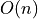
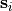
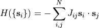
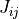
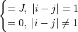
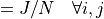
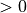
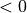

Spinner: a spin lattice simulation library
This library allows the creation of D-dimensional lattices or more general structures of spins from n-vector models (such as Ising, XY, Heisenberg, etc), sometimes also called  models, and their simulation using Monte Carlo Markov Chain (MCMC) methods.
Warning
This library is in early stage of development: it might produce incorrect results. It comes with absolutely no warranty, and you should use it at your own risk. Contributions are welcome.
Warning
So far only the single spin-flip metropolis dynamics has been implemented, and the only interaction available is ferromagnetic.
Note
Support for the Potts models and more interactions (long range, spin-glass, etc) is planned.
Lattice parameters and couplings
An n-vector model is a simple system of interacting n-vectors
, called spins, on a structure, usually an ordered
lattice, of size  . They interact with an Hamiltonian in the
form:
. They interact with an Hamiltonian in the
form:

The coupling constant  establishes which spins will interact.
Which elements of this matrix are nonzero define the extent of the interaction between the spins, the most common being the nearest-neighbor (NN) interaction:
Interaction |
|
|---|---|
 |
Nearest neighbor interaction |
 |
Long range interaction |
Different values for the nonzero coupling elements result in different models:
|
Interaction |
|---|---|
 |
Ferromagnetic, the spins will try to align to each other. |
 |
Antiferromagnetic, the spins will try to disalign from each other |
Random |
Spin-glass behavior |

Creating lattice parameter data
All the information about the structure of a particular lattice, and the
type of interaction between the spins, is contained in the datatype
spnr_params_t.
-
type spnr_params_t
This datatype holds information about a lattice, and can be shared between multiple instances of a lattice.
It can be created and destroyed with
-
spnr_params_t *spnr_params_cubicnn_alloc(float (*getter)(), size_t side, size_t n_dims, size_t param)
- Parameters:
getter –
pointer to function that returns the desired interaction; available getters are:
-
float spnr_ferr()
ferromagnetic interaction, returns
+SPNR_J
-
float spnr_antiferr()
antiferromagnetic interaction, returns
-SPNR_J
-
float spnr_bim()
bimodal interaction, returns
+SPNR_Jor-SPNR_Jwith equal probability
-
float spnr_ferr()
side – the side length in spins of the lattice structure
n_dims – the number of dimensions of the lattice structure
param – a generic parameter that lattice kinds interpret differently: in the n-vector model it represent n, the number of components of the vectors, while in the Potts model it’s q, the number of colors
- Returns:
a pointer to a newly allocated
spnr_param_tobject with cubic structure and nearest neighbor interaction
-
spnr_params_t *spnr_params_longrange_alloc(float (*getter)(), size_t side, size_t n_dims, size_t param)
- Returns:
a pointer to a newly allocated
spnr_param_tobject with long range interactions; onlysize = pow (side, n_dims)is needed for the computations, and these parameters are otherwise ignored
-
void spnr_params_nn_free(spnr_params_t *p)
Frees the
spnr_params_tonject with nearest neighbor interaction
-
void spnr_params_lr_free(spnr_params_t *p)
Frees the
spnr_params_tonject with long range interaction
Example:
#include "spinner.h"
int main ()
{
spnr_params_t *params = spnr_params_cubicnn_alloc (spnr_ferr, 16, 2, 0);
spnr_prams_nn_free (params);
}
Creating lattices from the parameter type
In this section are covered the basics of making lattice objects from a single shared set of parameters.
All the information about the kinds of spins that populate the lattice
and the functions needed to operate on them, are contained in the
datatype spnr_latt_kind_t.
-
type spnr_kind_t
Defines a static structure which holds functions that act on a particular kind of lattice. It does not hold any data, and it’s shared between lattices.
The following lattice types are available.
-
spnr_kind_t *spnr_ising_cubicnn
Ising model on a cubic lattice with nearest neighbor interaction
-
spnr_kind_t *spnr_ising_longrange
Ising model on a graph with long range interaction
-
spnr_kind_t *spnr_nvector_cubicnn_ferr
n-vector model on a cubic lattice with nearest neighbor interaction
-
spnr_kind_t *spnr_ising_cubicnn
A lattice is defined using the spnr_latt_t datatype
-
type spnr_latt_t
This datatype represents a lattice object with a defined kind of spins and it can share its
spnr_param_tstructure with other lattice instances
These are the functions for creating and destroying a lattice.
-
spnr_latt_t *spnr_latt_alloc(spnr_latt_kind_t *kind, size_t side, size_t n_dims, size_t param)
- Parameters:
kind – a pointer to the requested lattice kind
params – a pointer to the requested lattice params
- Returns:
a pointer to an allocated
spnr_latt_tvariable
-
void spnr_latt_free(spnr_latt_t *l)
Frees every pointer allocated by
spnr_latt_alloc.
Example:
#include "spinner.h"
int main ()
{
spnr_params_t *p = spnr_params_cubicnn_alloc (spnr_ferr, 8, 2, 0);
spnr_latt_t *l = spnr_latt_alloc (spnr_ising_cubicnn, p);
spnr_latt_free (l);
spnr_params_free (p);
}
Simulating a lattice
In this section is covered the process of simulating a lattice with MCMC methods.
This library provides the following datatype to store the simulation data.
-
type spnr_data_t
Contains a size parameter and two arrays, which hold the energy and the magnetization for each time step.
These functions can be used to create or destroy one.
-
spnr_data_t *spnr_data_alloc(size_t size)
-
void spnr_data_free(spnr_data_t *d)
-
void spnr_data_write(spnr_data_t *d, char *fname)
Writes the simulation data in a plain text
.datfile with the provided name.
Running the simulation requires calling the appropriate function.
-
type spnr_func_getter_t
Datatype that holds a pointer to a function that grabs the required algorithm from the
-
spnr_data_t *spnr_latt_run(spnr_func_getter_t *getter, spnr_latt_t *l, size_t n_steps, size_t n_probes, float temp)
Runs the simulation with a single spin flip metropolis algorhithm.
- Parameters:
getter –
a pointer to the requested algorithm getter, to be chosen from:
-
spnr_func_getter_t spnr_metr
gets the single spin-flip Metropolis dynamics
-
spnr_func_getter_t spnr_wolff
gets the clister-flip Wolff dynamics
-
spnr_func_getter_t spnr_metr
l – the lattice to sample
n_steps – the number of Monte Carlo steps to run (each MC step is equivalent to N single spin flip steps where N is the size of the lattice)
n_probes – the number of times the lattice is probed for energy and magnetization
temp – the temperature at which the simulation is run
- Returns:
a pointer to a freshly allocated
spnr_data_tvariable which contains the simulation data for each probe in order. This pointer must be freed withspnr_data_free.
Example:
#include "spinner.h"
int main ()
{
spnr_data_t *run;
spnr_latt_t *l = spnr_latt_alloc (spnr_ising_cubicnn_ferr, 3, 3, 0);
run = spnr_latt_run_ssf_met (l, 1000, 100, 3.0);
spnr_data_write (run, "data")
spnr_data_free (run);
spnr_latt_free (l);
}
Computing means and correlations
This library provides the following functions to study the obtained data.
-
void spnr_data_calc_mean(spnr_data_t *d, float *h, float *m)
Returns in the pointers provided the mean values for energy and magnetization.
-
spnr_data_t *spnr_data_calc_corr(spnr_data_t *d)
- Returns:
a pointer to an allocated
spnr_data_tvariable holding the temporal correlation for both energy and magnetization. The pointer must be freed withspnr_data_free
Example:
#include "spinner.h"
int main ()
{
float h = 0, m = 0;
spnr_data_t *run, *corr;
spnr_params_t *p = spnr_params_cubicnn_alloc (spnr_ferr, 8, 2, 0);
spnr_latt_t *l = spnr_latt_alloc (spnr_ising_cubicnn, params);
run = spnr_latt_run (spnr_metr, l, 1000, 100, 3.0);
corr = spnr_data_calc_corr (run);
spnr_data_mean_calc (run, &h, &m);
printf("%f %f\n", h, m);
spnr_data_write (run, "data");
spnr_data_write (corr, "corr");
spnr_data_free (corr);
spnr_data_free (run);
spnr_latt_free (l);
spnr_params_nn_free (p);
}